科学结论：二维主体M2尚未达标。5/5主条件有独立数值输出，0/5通过冻结相对位姿门限。Ring-only 5/5。所有失败、未匹配与HOLDOUT均保留。
逐点Face/重心/XYZ/置信度/失败CSV · 共同数值条件配对 · 逐帧对应失败 · 仅二维候选与质量 · 候选Failure Registry
G01-like 双视频完整曲面配准
G01_LIKE_SIMULATION · SYNTHETIC_HERO_PROXY；所有输出来自实际冻结运行，未认证真实部署。数值输出与科学正确性分开统计。
打开完整曲面五阶段交互 · 技术报告 · 结果卡 · 运行清单 · 完整数值CSV · 失败台账
Below historical engineering evidence is explicitly separate from current scientific figures.
历史工程回归输入（非本轮结果）

实际局部Mesh：004 1160 顶点/2075 三角面；005 1100 顶点/1976 三角面。Body未更新。未匹配区域、GT不评价区域、局部相机消融及失败方法均保留。
Actual complete meshes, fixed metric views; error colors 0-1+mm
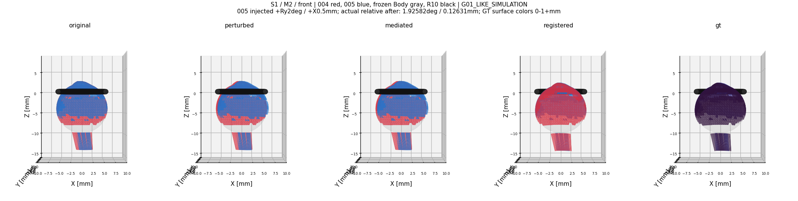
Actual complete meshes, fixed metric views; error colors 0-1+mm
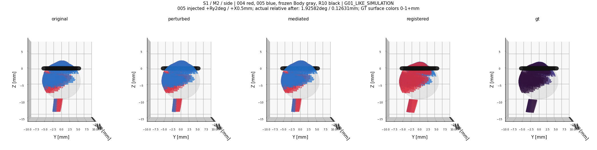
Actual complete meshes, fixed metric views; error colors 0-1+mm
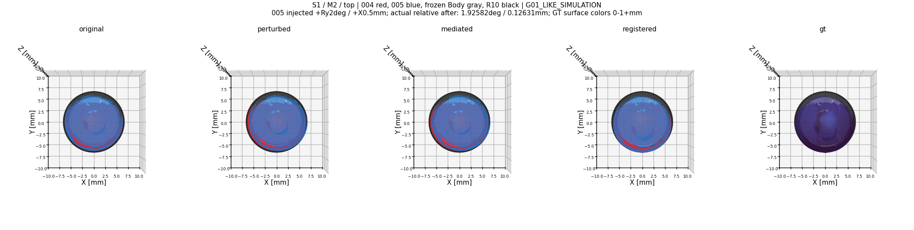
All primary conditions, actual complete registered local meshes
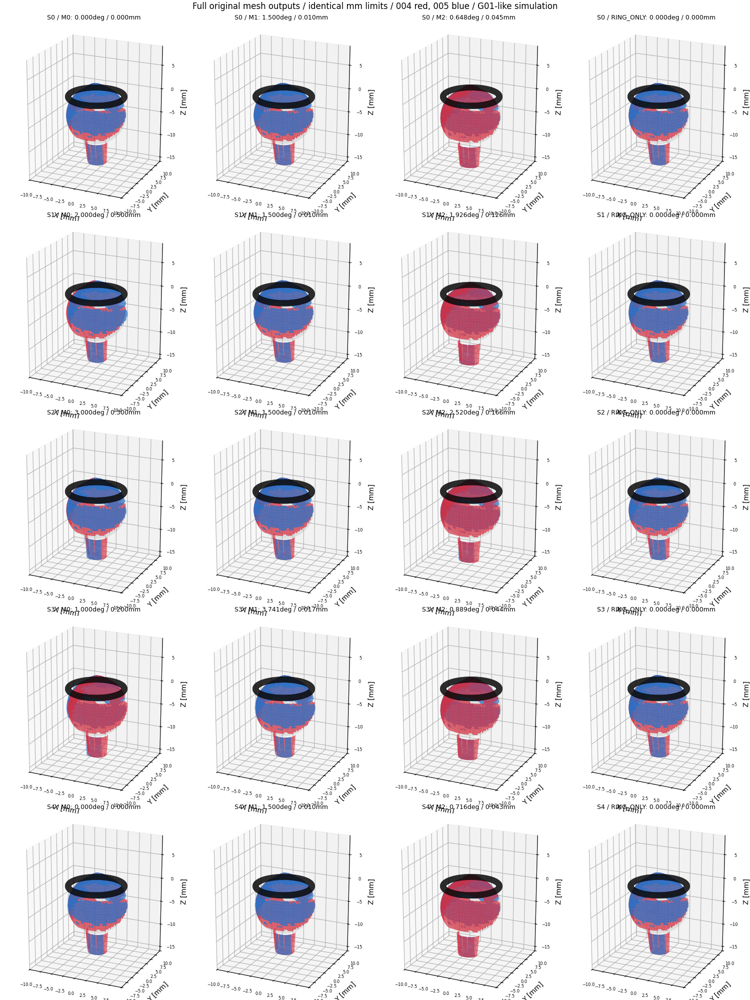
Original real contour, actual synthetic observations, fitted ellipse and nontrivial Body warp
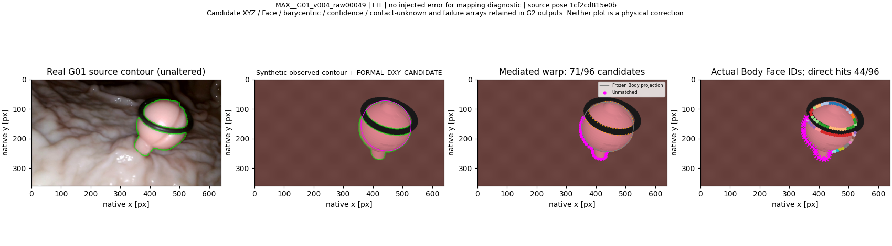
Original real contour, actual synthetic observations, fitted ellipse and nontrivial Body warp
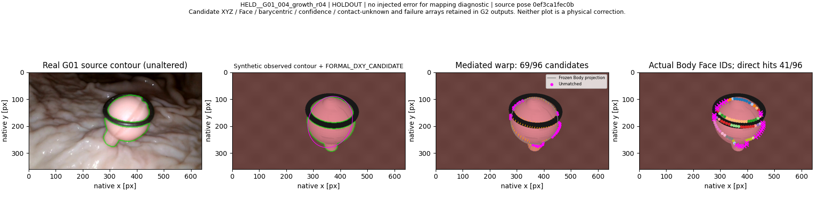
Original real contour, actual synthetic observations, fitted ellipse and nontrivial Body warp
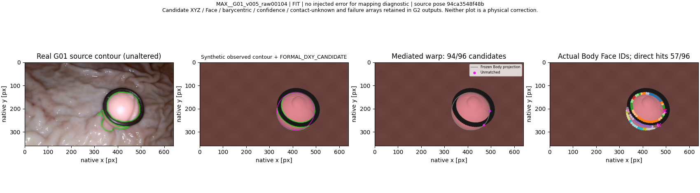
Original real contour, actual synthetic observations, fitted ellipse and nontrivial Body warp
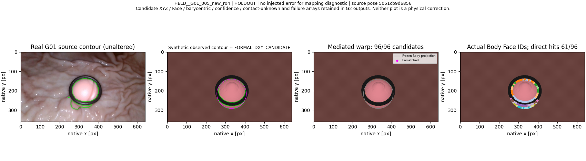
Actual all-method numerical results; S4 common gauge retained
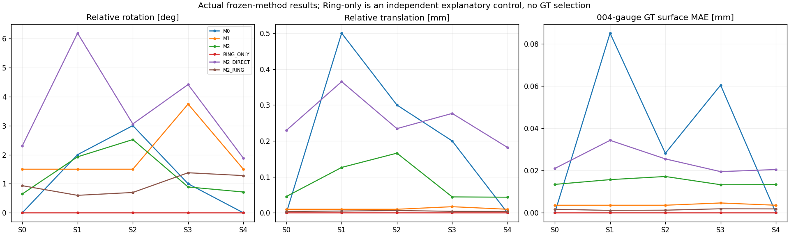
场景真实性/内部核验 · 初始化与HOLDOUT · 对应覆盖/错误/配对 · 独立GT评价全部指标
真实原图Ring与原生相机CAD投影差异
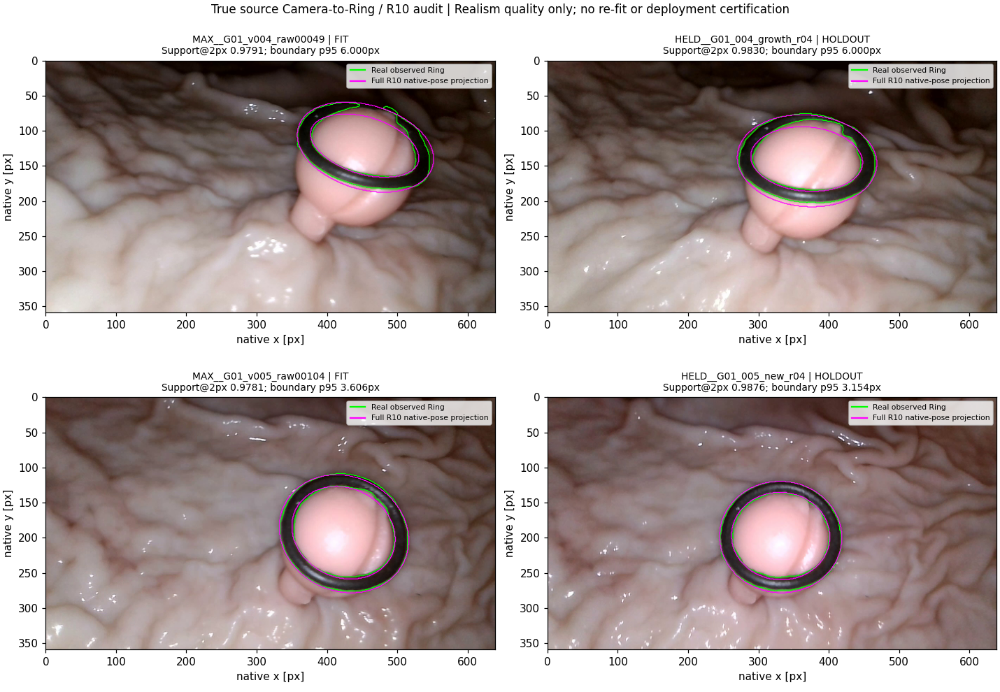
真实轮廓、已冻结API椭圆及虚拟Body候选区域
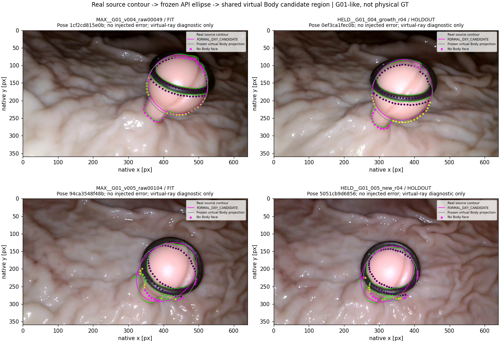
真实双轨迹来源在声明的共同虚拟坐标系和完整局部曲面
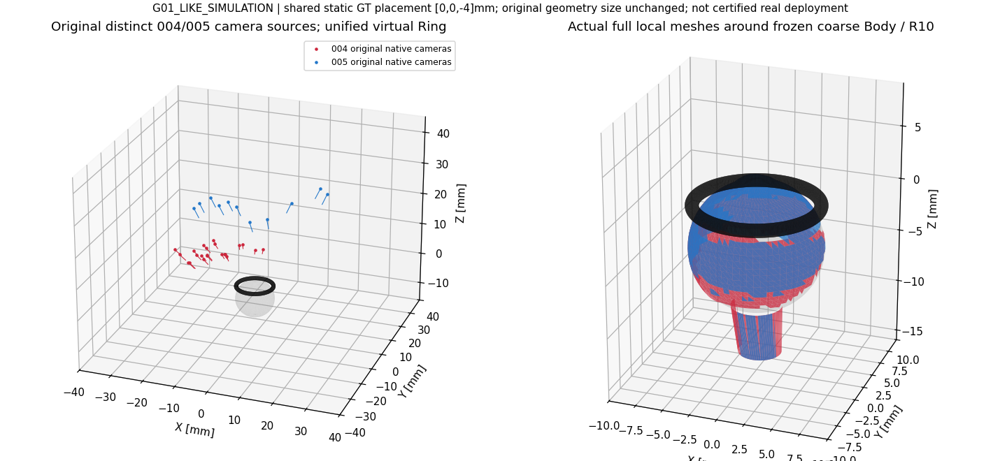
所有GT表面误差图共享Turbo色标0–1+mm
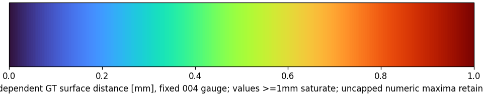